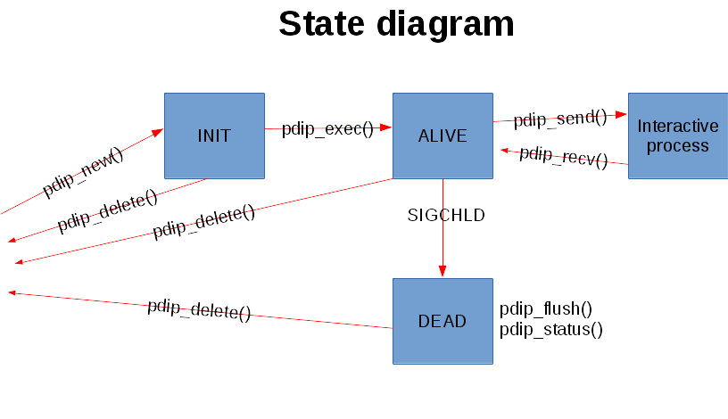

Back
to
home
page
Back to
previous page
Programmed
Dialogue with Interactive Programs
Introduction
Usage of the command
Examples with the command
Application programming Interface (API)
Download
Installation & build
About the author
Related links
Introduction
PDIP stands for Programmed
Dialogue
with Interactive
Programs. It
is a command line oriented utility looking like a
simplified version of the famous EXPECT utility. The
acronym PDIP itself comes from the first lines of the manual of EXPECT.
Like EXPECT,
it is a freeware and it interprets a scripting language to
dialog
with an interactive program as a human operator would do. But it has
not all the bells and whistles of EXPECT
which is able to interact with multiple programs at the same
time, accept a high level scripting language providing branching and
high level control structures or giving back the control to the
operator during a session.
PDIP accepts a very simple language on the input to provide basic
functions such as:
- Filtering the program’s output to catch a string
matching a given pattern
- Sending strings of characters to the program
- Stopping interactions with the program during a given
amount of seconds
PDIP has been designed to run under any Linux operating system.
The command to launch along with its options and parameters is passed
at the end of the command line. If options are passed to pdip and/or
the command, then the command
must be
preceded by a double hyphen (--). Otherwise the
options
will be passed to pdip and will trigger errors.
For C language programmers, PDIP provides a C language Application Programming Interface (API) to give the ability to pilot processes from an application process.
Usage of the command
The command line to launch PDIP looks like:
pdip [ -s
cmdfile ] [ -b buffer-size ] [ -d
level ] [ -h ]
[ -V ] [ -e ] [ -t
] [ -o ] [ -p ]-- command options
parameters...
The options are:
-b
buffer-size |
--bufsz=buffer-size
Size in bytes of the internal I/O buffer (default: 512).
-d
| --debug
Set the debug mode. It is helpful to understand why a command script
does not work as expected.
-h | --help
Display the help of the command (subset of this man page).
-s
cmdfile |
--script=cmdfile
Script of input commands (default stdin).
PDIP reads cmdfile or the
standard input (default) and accepts the
following commands:
#...
# and the following words up to the end of line are ignored (used for
comments)
dbg level
Set the debug level to level. The higher the level, the more
traces you get. The value 0 deactivates the debug mode.
timeout
x
Set to x seconds the maximum time to wait
on each
following commands (the value 0 cancels the timeout, this is the
default)
recv "w1 w2..."
Wait for a line with the pattern w1 w2... from the program.
The
pattern is regular expression conforming to regex (cf.
Section 7
of Linux manual).
send "w1 w2..."
Send the string w1 w2... to the program.
print "w1 w2..."
Print the string w1 w2... onto the standard output.
For both send and print commands, the string may
contain control characters with the notation "^character". For example,
"^C" means CONTROL C. The following shortcuts are also accepted:
\a Bell
\b Backspace
\t Horizontal tabulation
\n New line
\v Vertical tabulation
\f Form feed
\r Carriage return
\" Double quote
\\ Backslash
\[ Escape
\] Group Separatorroup Separator
\^ ^ character
sig
signame
Send the Linux signal signame
to the program. signame
is one of: HUP, INT, QUIT, ILL, TRAP, ABRT, BUS, FPE, KILL, USR1, SEGV,
USR2, PIPE, ALRM, TERM.
sleep x
Stop activity during x seconds
exit
Terminate PDIP
sh [-s] cmd par...
Launch the cmd par... shell command (synchronously if -s is specified).
-V
| --version
Display the version of the software.
-e | --error
Redirect error output of the controlled program.
-t | --term
Make pdip behave as a simple line mode terminal.
-o | --outstand
Make pdip print unread data from the controlled program at the end of
the session.
-p | --propexit
Propagate the exit code of the controlled
program to
pdip. This
makes
pdip exit with the exit
code of the controlled program (the exit code is 1 if the controlled
program terminates because of a signal). By default, the exit code of
pdip is 0 no matter the exit code of
the controlled program unless there is an error internal to
pdip.
-R | --backread
Read and store in background incoming data from controlled program even when no 'recv' command is on track. This avoids the blocking of the controlled program on a 'write' system call because of the saturation of the internal pseudo-terminal buffer when
pdip is not in a data reception state (i.e. 'recv' command). But this makes
pdip allocate dynamic memory to store the pending read data.
Examples with the command
The following example shows
how to
set up a telnet connection to a given host called
’remote’
on the TCP port 34770 with the
login name
’foo’ and password
’bar’. Since the remote port is specified with an
option (-p), it is mandatory to put a double
hyphen
(--) before the command to launch. Commands are injected on
the
standard
input. We wait for the ’$’ prompt and
launch the
ls(1) command before disconnecting from the shell via the exit
command.
$
pdip -- telnet -p 34770
remote
recv "login"
send
"foo\n" # Login name is ’foo’
recv "Password"
send
"bar\n" # Password is ’bar’
recv "\$
" # Inhibition of the
metacharacter ’$’ with ’\’
send
"ls\n" # Launch the
’ls’ command
recv "\$ "
send
"exit\n" # Exit from the shell
exit
#
Exit
from
PDIP
$
The following example shows how to set up a ftp
connection to a given
host called
’remote’ with the login name
’foo’ and password
’bar’. Commands are injected on the
standard input.
We wait for the ’ftp>’ prompt at the
beginning of
the line and launch the
’help’
command before disconnecting from ftp with the
’quit’
command.
$
pdip ftp remote
recv "Name"
send
"foo\n" # Login name is
’foo’
recv "Password"
send
"bar\n" # Password is
’bar’
recv "^ftp>
" # Prompt at beginning of line
send
"help\n" # Launch the ’help’
command
recv "^ftp> "
send
"quit\n" # Terminate FTP
exit
#
Exit
from
PDIP
$
The following example shows how to interact with the program
bc which does not display any prompt. We use the metacharacter
’$’ to synchronize on end of
lines. Two
operations are launched ’3+4’ and
’6*8’. Then
we quit bc.
$
pdip bc
recv
"warranty" # Near the end of the startup banner
recv
"$"
# End of last line of the banner
send "3+4\n"
recv
"$"
# Receive the end of line of the echo
recv
"$"
# Receive the end of line of the result
send "6*8\n"
recv "$"
recv "$"
send
"quit\n" # Terminate BC
exit
#
Exit
from
PDIP
$
The following example shows how to set up a telnet(1)
connection
to a given host called
’remote’ with the login name ’foo’
and password ’bar’. Commands are injected on the
standard input. With a
regular
expression, we wait
for
the prompt
of the form
"xxxx-<login_name>-pathname> "
or
"xxxx-<login_name>-pathname>"
at the beginning of
the line. Then we launch the ’ls -l’ command
before disconnecting from
telnet(1) with
the ’exit’ command.
$
pdip telnet remote
recv "login:"
send
"foo\n"
#
Login
name
is ’foo’
recv "Password:"
send
"bar\n"
#
Password
is
’bar’
recv
"^(.)+-foo-(.)+(>|> )$" # Prompt at beginning
of line
send "ls
-l\n"
#
Launch
the
’ls -l’ command
recv
"^(.)+-foo-(.)+(>|> )$"
send
"exit\n"
#
Terminate
telnet
exit
#
Exit
from
PDIP
$
Application Programming Interface (API)
Synopsis
Description
Return value
Errors
Mutual exclusion
Examples
Synopsis
#include "pdip.h"
int pdip_configure(int sig_hdl_internal, int debug_level);
int pdip_cfg_init(pdip_cfg_t *cfg);
pdip_t pdip_new(pdip_cfg_t *cfg);
int pdip_delete(pdip_t ctx, int *status);
int pdip_exec(pdip_t ctx, int ac, char *av[]);
int pdip_fd(pdip_t ctx);
int pdip_set_debug_level(pdip_t ctx, int level);
int pdip_send(pdip_t ctx, const char *format, ...);
int pdip_recv(pdip_t *ctx, const char *regular_expr, char **display, size_t *display_sz, size_t *data_sz, struct timeval *timeout);
int pdip_sig(pdip_t ctx, int sig);
int pdip_flush(pdip_t ctx, char **display, size_t *display_sz, size_t *data_sz);
int pdip_status(pdip_t ctx, int *status, int blocking);
int pdip_lib_initialize(void);
Description
The PDIP API is a C language library named libpdip.so providing the ability to control terminal oriented interactive processes by simulating an operator. Each controlled process is associated to a PDIP object.
The transition diagram of a PDIP object as well as the services applicable to each state are depicted below:

pdip_configure() is supposed to be called prior any other service as it configures some internals of the library:
- sig_hdl_internal
If set to a value different than 0, the library manages the SIGCHLD signal of the dead child processes internally. If it is set to 0, the application is supposed to call:
int pdip_signal_handler(int sig, siginfo_t *info);
to let the library manage the SIGCHLD signal concerning the child processes that it launched internally. The parameters passed to this callback are sig which must be equal to SIGCHLD (may be other signal will be managed later) and info, the signal information passed by Linux to the signal handler when declared through sigaction(2). The function returns PDIP_SIG_HANDLED, if the SIGCHLD signal belonged to one of its PDIP objects, PDIP_SIG_UNKNOWN if the signal does not concern any of its PDIP objects or PDIP_SIG_ERROR, in case of error. When the return code is PDIP_SIG_UNKNOWN, the application is supposed to manage the signal on its side. In the case where this function returns PDIP_SIG_HANDLED, the application must not get the status of the child process with calls like wait(2) or waitpid(2).
If needed, pdip_status() provides the status.
- debug_level
The global debug level of the service. The higher the value, the more debug messages are displayed. 0, disables the debug messages. This parameter can also be set by a call to pdip_set_debug_level().
If a configuration structure is passed to pdip_new(), it is advised to call
pdip_cfg_init()
which initializes the cfg configuration structure to its default values. Using this call makes any future evolutions to the structure transparent to the applications designed
with older versions of the library. The structure is described below in the presentation of pdip_new().
pdip_new() creates a PDIP object. To configure the object, the function is passed an optional parameter cfg of type:
typedef struct
{
FILE *dbg_output; // Stream into which are displayed the debug messages
// of the PDIP object
// If NULL, it defaults to stderr
FILE *err_output; // Stream into which are displayed the error messages
// of the PDIP object
// If NULL, it defaults to stderr
int debug_level; // Debug level of the PDIP object. The higher the value, the more debug
// messages are displayed
// Default: 0 (no debug messages)
unsigned int flags;
#define PDIP_FLAG_ERR_REDIRECT 0x01 // If set, the stderr of the controlled process is also
// redirected to the main program.
// Otherwise, it is inherited from the main program (default)
#define PDIP_FLAG_RECV_ON_THE_FLOW 0x02 // If set, data are returned to the user as
// they are received even if the regular expression
// is not found (returned code is PDIP_RECV_DATA)
// Otherwise, the data is returned when
// the regular expression is found (default)
unsigned char *cpu; // Array of bits describing the CPU affinity of the controlled process
// Allocated/freed with pdip_cpu_alloc()/pdip_cpu_free()
// cf. pdip_cpu(3)
//By default, the affinity is inherited from the main program
size_t buf_resize_increment; // Amount of space in bytes to add to the reception
// buffer each time additional space is needed
// Default is 1 KB
} pdip_cfg_t;
If this parameter is NULL, the default values are used. If it is not NULL, it is advised to initialize it with a call to pdip_cfg_init()
before setting its fields. The function returns a PDIP object of type pdip_t. This object is passed as parameter to most of the following services.
pdip_delete() is the counterpart of pdip_new() as it deallocates the ctx PDIP object allocated by a preceding call to pdip_new(). If not NULL, status is updated with the termination status of the controlled process.
pdip_exec() executes a program which will be controlled by the ctx PDIP object. ac and av respectively describe the number of parameters and the parameters of the program to execute. They behave the same as the famous parameters passed to the main() function of the C language programs. In other words, they describe the program name to run along with its parameters.
pdip_fd() returns the file descriptor of the ctx PDIP object (that is to say the file descriptor of the internal pseudo-terminal interfaced with the controlled program). This is useful in event driven applications where it is needed to be warned when data are available from the controlled program.
pdip_set_debug_level() sets the debug level of the ctx PDIP object to the value of level. The higher the value of level, the more debug messages will be displayed. The debug level and the output stream for the debug messages can also be configured at object creation time through the parameter passed to pdip_new(). If ctx is NULL, the service sets the global debug level of the service. That is to say, this controls the debug messages not linked to PDIP objects. A debug level equal to 0 deactivates the display of debug messages.
pdip_send() sends a string formatted with format to the process controlled by the ctx PDIP object. The behaviour of the format is compliant with printf(3). The size of the internal buffer to format the string is 4096 bytes. Over this limit, the function returns an error.
pdip_recv() receives data from the process controlled by the ctx PDIP object. The user may pass a regular expression (regular_expr) compliant with regex(7) and/or a timeout. The data reception stops once either the timeout is elapsed or the regular expression is found. If neither the regular expression is found (or regular_expr is NULL) nor the timeout is set (i.e. timeout is NULL), the function waits indefinitely unless the controlled process dies. The function is passed three additional parameters display, display_sz and data_sz which respectively contain the address of a dynamic memory buffer to store the data in, the physical size of the buffer and the number of bytes that the service stored into it. The data is NUL terminated by the service. data_sz does not count this last character (this is equivallent to the result of a call to strlen(3) on the buffer). If the display address of the buffer is NULL or the display_sz physical size of the buffer is not sufficient to contain the received data, the buffer is allocated or reallocated (in the latter case, the former buffer is freed by the service). Anyway, display and display_sz are respectively updated with the new address and the new size of the buffer. If the user puts a non NULL address in display parameter, IT IS VERY IMPORTANT TO PASS THE BEGINNING ADDRESS OF A DYNAMIC MEMORY BUFFER as the service may reallocate or free it through calls to realloc(3) or free(3).
The timeout is a structure defined in <sys/time.h> as:
struct timeval
{
long tv_sec; // Seconds
long tv_usec; // Microseconds
};
pdip_sig() sends the sig Linux signal to the process controlled by the ctx PDIP object. The list of available signals is defined in <signal.h>.
pdip_flush() flushes any outstanding data from the ctx PDIP object. In other words, it concerns any data coming from the controlled process which have not been received yet by the application through a call to pdip_recv() service. The function behaves the same as pdip_recv() to update its display, display_sz and data_sz parameters.
pdip_status() returns the exit status in status (if not NULL) of the dead controlled process attached to the ctx PDIP object. The value of status can be inspected with macros as explained in wait(2). If the third parameter blocking is set to non 0, the service waits until the controlled process terminates. If set to 0, the service returns immediately reporting an error (errno is set to EAGAIN) if the controlled process is not terminated or 0 if the process is terminated.
pdip_lib_initialize() is to be called in child processes using the PDIP API. By default, PDIP API is deactivated upon fork(2).
Return value
pdip_new() returns a PDIP object of type pdip_t if there are no error or (pdip_t)0 upon error (errno is set).
pdip_exec() returns the pid of the controlled process or -1 upon error (errno is set).
pdip_fd() returns the file descriptor of the pseudo-terminal linked with the controlled process or -1 upon error (errno is set).
pdip_cfg_init(), pdip_configure(), pdip_delete(), pdip_set_debug_level(), pdip_flush(), pdip_sig(), pdip_status() and pdip_lib_initialize() return 0 when there are no error or -1 upon error (errno is set).
pdip_send() returns the amount of sent characters or -1 upon error (errno is set).
pdip_recv() returns:
- PDIP_RECV_FOUND
The regular expression is found. There are data in the returned buffer (i.e. data_sz > 0 unless the regular expression matched the beginning of the first line of the incoming data).
- PDIP_RECV_TIMEOUT
The timeout elapsed.
- PDIP_RECV_DATA
No regular expression was passed and data arrived (with or without timeout). Received data are in the returned buffer (i.e. data_sz > 0). This return code is also possible with a regular expression when PDIP_FLAG_RECV_ON_THE_FLOW is set.
- PDIP_RECV_ERROR
An error occured (errno is set). However, there may be received data in the returned buffer (i.e. If data_sz > 0).
Errors
The functions may set errno with the following values:
- EINVAL
Invalid parameter
- ECHILD
Program execution error or terminated prematurely
- EAGAIN
Status not available (process not dead)
- ENOENT
Object not found
- ESRCH
Process not running
- EPERM
Operation not permitted as another process is already under control
- ENOSPC
Argument too big for internal buffer
Mutual exclusion
By default, the service supposes that each PDIP object is managed at most by one thread. If an application shares a PDIP object between multiple threads, it is responsible to manage the mutual exclusion on its side.
Examples
In the related links paragraph, there are references to ISYS and RSYS packages which are applications using PDIP library to propose alternate versions of system(3) of the C library.
The following program controls a bash shell. Before running the shell, the program modifies the PS1 environment variable to define the prompt displayed by the shell otherwise the prompt would be inherited by the current shell which may be anything defined by the operator. Then, it synchronizes on the display of the first prompt, executes the ls -la / command and synchronizes on the prompt appearing right after the command execution. Then it executes the exit command to stop the shell.
#include <stdio.h>
#include <stdlib.h>
#include <errno.h>
#include <string.h>
#include "pdip.h"
int main(int ac, char *av[])
{
pdip_t pdip;
char *bash_av[4];
int rc;
char *display;
size_t display_sz;
size_t data_sz;
pdip_cfg_t cfg;
int status;
(void)ac;
(void)av;
// Let the service manage the SIGCHLD signal as we don't fork/exec any
// other program
rc = pdip_configure(1, 0);
if (rc != 0)
{
fprintf(stderr, "pdip_configure(): '%m' (%d)\n", errno);
return 1;
}
// Create a PDIP object
pdip_cfg_init(&cfg);
// The bash prompt is displayed on stderr. So, to synchronize on it, we must
// redirect stderr to the PTY between PDIP and bash
cfg.flags |= PDIP_FLAG_ERR_REDIRECT;
cfg.debug_level = 0;
pdip = pdip_new(&cfg);
if (!pdip)
{
fprintf(stderr, "pdip_new(): '%m' (%d)\n", errno);
return 1;
}
// Export the prompt of the BASH shell
rc = setenv("PS1", "PROMPT> ", 1);
if (rc != 0)
{
fprintf(stderr, "setenv(PS1): '%m' (%d)\n", errno);
return 1;
}
// Attach a bash shell to the PDIP object
bash_av[0] = "/bin/bash";
bash_av[1] = "--noprofile";
bash_av[2] = "--norc";
bash_av[3] = (char *)0;
rc = pdip_exec(pdip, 3, bash_av);
if (rc != 0)
{
fprintf(stderr, "pdip_exec(bash): '%m' (%d)\n", errno);
return 1;
}
// Synchronize on the first displayed prompt
display = (char *)0;
display_sz = 0;
data_sz = 0;
rc = pdip_recv(pdip, "^PROMPT> ", &display, &display_sz, &data_sz, (struct timeval*)0);
if (rc != PDIP_RECV_FOUND)
{
fprintf(stderr, "pdip_recv(): Unexpected return code %d\n", rc);
return 1;
}
// Display the result
printf("%s", display);
// Execute the "ls -la /" command
rc = pdip_send(pdip, "ls -la /\n");
if (rc < 0)
{
fprintf(stderr, "pdip_send(ls -la /): '%m' (%d)\n", errno);
return 1;
}
// Synchronize on the prompt displayed right after the command execution
// We pass the same buffer that will be eventually reallocated
rc = pdip_recv(pdip, "^PROMPT> ", &display, &display_sz, &data_sz, (struct timeval*)0);
if (rc != PDIP_RECV_FOUND)
{
fprintf(stderr, "pdip_recv(): Unexpected return code %d\n", rc);
return 1;
}
// Display the result
printf("%s", display);
// Execute "exit" to go out of the shell
rc = pdip_send(pdip, "exit\n");
if (rc < 0)
{
fprintf(stderr, "pdip_send(exit): '%m' (%d)\n", errno);
return 1;
}
// Wait for the end of "bash"
rc = pdip_status(pdip, &status, 1);
if (0 != rc)
{
fprintf(stderr, "pdip_status(): '%m' (%d)0, errno);
return 1;
}
printf("bash ended with status 0x%x0, status);
// Delete the PDIP object
rc = pdip_delete(pdip, 0);
if (rc != 0)
{
fprintf(stderr, "pdip_delete(): '%m' (%d)\n", errno);
return 1;
}
return 0;
} // main
The program execution displays:
$ ./man_exe_1
PROMPT> ls -la /
total 108
drwxr-xr-x 24 root root 4096 oct. 22 21:28 .
drwxr-xr-x 24 root root 4096 oct. 22 21:28 ..
drwxr-xr-x 2 root root 4096 juil. 6 17:22 bin
drwxr-xr-x 4 root root 4096 oct. 22 21:42 boot
drwxrwxr-x 2 root root 4096 janv. 4 2017 cdrom
[...]
lrwxrwxrwx 1 root root 29 oct. 22 21:28 vmlinuz -> boot/vmlinuz-4.8.0-59-generic
lrwxrwxrwx 1 root root 29 juil. 6 17:24 vmlinuz.old -> boot/vmlinuz-4.8.0-58-generic
PROMPT> bash ended with status 0x0
The following program is passed a mathematic operation as argument. It uses bc tool to compute it. Some precautions are required for the synchronization as bc does not display any prompt. Hence, the program uses "end of line" pattern matching.
#include <stdio.h>
#include <stdlib.h>
#include <errno.h>
#include <string.h>
#include <libgen.h>
#include "pdip.h"
int main(int ac, char *av[])
{
pdip_t pdip;
char *bash_av[3];
int rc;
char *display;
size_t display_sz;
size_t data_sz;
pdip_cfg_t cfg;
char *op;
int i;
int status;
if (ac != 2)
{
fprintf(stderr, "Usage: %s operation\n", basename(av[0]));
return 1;
}
// Let the service manage the SIGCHLD signal as we don't fork/exec any
// other program
rc = pdip_configure(1, 0);
if (rc != 0)
{
fprintf(stderr, "pdip_configure(): '%m' (%d)\n", errno);
return 1;
}
op = av[1];
// Create a PDIP object
pdip_cfg_init(&cfg);
cfg.debug_level = 0;
pdip = pdip_new(&cfg);
if (!pdip)
{
fprintf(stderr, "pdip_new(): '%m' (%d)\n", errno);
return 1;
}
// Attach the "bc" command to the PDIP object
// Option "-q" launches "bc" in quiet mode: it does not display
// the welcome banner
bash_av[0] = "bc";
bash_av[1] = "-q";
bash_av[2] = (char *)0;
rc = pdip_exec(pdip, 2, bash_av);
if (rc != 0)
{
fprintf(stderr, "pdip_exec(bc -q): '%m' (%d)\n", errno);
return 1;
}
// Execute the operation
rc = pdip_send(pdip, "%s\n", op);
if (rc < 0)
{
fprintf(stderr, "pdip_send(op): '%m' (%d)\n", errno);
return 1;
}
// Initialize the display buffer
display = (char *)0;
display_sz = 0;
data_sz = 0;
// For some reasons, "bc" echoes the operation two times ?!?
// ==> Skip them
for (i = 0; i < 2; i ++)
{
// Synchronize on the echo
// We pass the same buffer that will be eventually reallocated
rc = pdip_recv(pdip, "^.+$", &display, &display_sz, &data_sz, (struct timeval*)0);
if (rc != PDIP_RECV_FOUND)
{
fprintf(stderr, "pdip_recv(): Unexpected return code %d\n", rc);
return 1;
}
// Print the operation on the screen (one time :-)
if (0 == i)
{
printf("%s=", display);
}
// Skip the end of line
rc = pdip_recv(pdip, "$", &display, &display_sz, &data_sz, (struct timeval*)0);
if (rc != PDIP_RECV_FOUND)
{
fprintf(stderr, "pdip_recv($): Unexpected return code %d\n", rc);
return 1;
}
} // End for
// Synchronize on the result of the operation
rc = pdip_recv(pdip, "^.+$", &display, &display_sz, &data_sz, (struct timeval*)0);
if (rc != PDIP_RECV_FOUND)
{
fprintf(stderr, "pdip_recv(): Unexpected return code %d\n", rc);
return 1;
}
// Display the result of the operation with '0 as the match
// does not embed the end of line
printf("%s0, display);
fflush(stdout);
// Skip the end of line
rc = pdip_recv(pdip, "$", &display, &display_sz, &data_sz, (struct timeval*)0);
if (rc != PDIP_RECV_FOUND)
{
fprintf(stderr, "pdip_recv($): Unexpected return code %d\n", rc);
return 1;
}
// Execute "quit" to go out
rc = pdip_send(pdip, "quit\n");
if (rc < 0)
{
fprintf(stderr, "pdip_send(quit): '%m' (%d)\n", errno);
return 1;
}
// Synchronize on the echo of "quit"
// We pass the same buffer that will be eventually reallocated
rc = pdip_recv(pdip, "^quit$", &display, &display_sz, &data_sz, (struct timeval*)0);
if (rc != PDIP_RECV_FOUND)
{
fprintf(stderr, "pdip_recv(): Unexpected return code %d\n", rc);
return 1;
}
// Wait for the end of "bc"
rc = pdip_status(pdip, &status, 1);
if (0 != rc)
{
fprintf(stderr, "pdip_status(): '%m' (%d)0, errno);
return 1;
}
printf("bc ended with status 0x%x0, status);
// Delete the PDIP object
rc = pdip_delete(pdip, 0);
if (rc != 0)
{
fprintf(stderr, "pdip_delete(): '%m' (%d)\n", errno);
return 1;
}
return 0;
} // main
The program execution for "67*18" displays:
$ ./man_exe_2 67*18
67*18=1206
bc ended with status 0x0
Download
PDIP can be downloaded from this page
in one of the following three ways:
- Source package
- DEB binary package
- RPM binary package
Installation
& build
PDIP can be installed in three ways:
1. Installation
from the sources
2. Installation
from the DEB binary package
3. Installation
from the RPM binary package
From the sources, you can generate a DEB or binary package:
4. Generation
of a DEB binary package
5. Generation
of a RPM binary package
You can generate a zipped tar file of the sources:
6. Generation
of a zipped tar file
1.
Installation from the sources
The installation from the sources supposes that cmake
is installed on your Linux system.
Unpack the tar compressed file pdip-xxx.tgz into a directory. This will
create a sub-directory called pdip-xxx with the source files of the
program:
$ tar xvfz
pdip-xxx.tgz
Go into the newly created directory:
$ cd pdip-xxx
Make sure the file 'pdip_install.sh' has the execute permission:
$ chmod +x
pdip_install.sh
Launch the script 'pdip_install.sh' to get the help:
$ ./pdip_install.sh
-h
Usage:
pdip_install.sh [-c] [-d install_root_dir] [-P DEB | RPM] [-B] [-I] [-A] [-h]
-c
:
Cleanup built objects
-d
:
Installation
directory (default: /usr/local)
-P
:
Generate
a DEB or RPM package
-B
:
Build
the software
-I
:
Install
the software
-A
:
Generate
an archive of the software (sources)
-h
:
this
help
Under root identity, launch the installation by passing '-I' and
optionnaly '-d' to specify an installation directory different than
'/usr/local':
For example, for an installation in '/usr/local', type:
$ sudo
./pdip_install.sh -I
For an installation in '/usr', type;
$ sudo
./pdip_install.sh -I -d /usr
If your PATH variable is correctly set, PDIP help can be displayed:
$ pdip --help
[...]
If your MANPATH variable is correctly set, PDIP's online manual can be
displayed:
$ man pdip
[...]
2.
Installation of the binaries from the DEB package
The files are installed in via the command:
$ sudo dpkg -i
pdip-xxx.deb
3.
Installation of the binaries from the RPM package
The files are installed via the command:
$ sudo rpm -i
pdip-xxx.rpm
4.
Generation of a DEB binary package
The installation from the sources supposes that cmake
is installed on your Linux system
Unpack the tar compressed file pdip-xxx.tgz into a directory. This will
create a sub-directory called 'pdip-xxx' with the source files of the
program:
$ tar xvfz
pdip-xxx.tgz
Go into the newly created directory:
$ cd pdip-xxx
Make sure the file 'pdip_install.sh' has the execute permission:
$ chmod +x
pdip_install.sh
Launch the script 'pdip_install.sh' to get the help:
$ ./pdip_install.sh
-h
Usage:
pdip_install.sh [-c] [-d install_root_dir] [-P DEB | RPM] [-B] [-I] [-A] [-h]
-c
:
Cleanup built objects
-d
:
Installation
directory (default: /usr/local)
-P
:
Generate
a DEB or RPM package
-B
:
Build
the software
-I
:
Install
the software
-A
:
Generate
an archive of the software (sources)
-h
:
this
help
Under root identity, launch the installation by passing '-P DEB' and
optionnaly '-d' to specify an installation directory different than
'/usr/local':
For example, for a package which will be installed in '/usr/local',
type:
$ sudo
./pdip_install.sh -P DEB
For an installation in '/usr', type;
$ sudo
./pdip_install.sh -P DEB -d /usr
5.
Generation of a RPM binary package
The installation from the sources supposes that cmake
is installed on your Linux system.
Unpack the tar compressed file pdip-xxx.tgz into a directory. This will
create a sub-directory called 'pdip-xxx' with the source files of the
program:
$ tar xvfz
pdip-xxx.tgz
Go into the newly created directory:
$ cd pdip-xxx
Make sure the file 'pdip_install.sh' has the execute permission:
$ chmod +x
pdip_install.sh
Launch the script 'pdip_install.sh' to get the help:
$ ./pdip_install.sh
-h
Usage:
pdip_install.sh [-c] [-d install_root_dir] [-P DEB | RPM] [-B] [-I] [-A] [-h]
-c
:
Cleanup built objects
-d
:
Installation
directory (default: /usr/local)
-P
:
Generate
a DEB or RPM package
-B
:
Build
the software
-I
:
Install
the software
-A
:
Generate
an archive of the software (sources)
-h
:
this
help
Under root identity, launch the installation by passing '-P RPM' and
optionnaly '-d' to specify an installation directory different than
'/usr/local':
For example, for a package which will be installed in '/usr/local',
type:
$ sudo
./pdip_install.sh -P RPM
For an installation in '/usr', type;
$ sudo
./pdip_install.sh -P RPM -d /usr
6.
Generation of a zipped tar file
The installation from the sources supposes that cmake
is installed on your Linux system.
Unpack the tar compressed file pdip-xxx.tgz into a directory. This will
create a sub-directory called 'pdip-xxx' with the source files of the
program:
$ tar xvfz
pdip-xxx.tgz
Go into the newly created directory:
$ cd pdip-xxx
Make sure the file 'pdip_install.sh' has the execute permission:
$ chmod +x
pdip_install.sh
Launch the script 'pdip_install.sh' to get the help:
$ ./pdip_install.sh
-h
Usage:
pdip_install.sh [-c] [-d install_root_dir] [-P DEB | RPM] [-B] [-I] [-A] [-h]
-c
:
Cleanup built objects
-d
:
Installation
directory (default: /usr/local)
-P
:
Generate
a DEB or RPM package
-B
:
Build
the software
-I
:
Install
the software
-A
:
Generate
an archive of the software (sources)
-h
:
this
help
Under root identity, launch the installation by passing '-A':
$ sudo
./pdip_install.sh -A
About the
author
The author is an engineer in computer sciences located in France. He is
glad to graciously offer this simple utility under the GPL open source
license. He can be contacted at "rachid dot koucha at gmail dot com" or
you can have a look at his WEB
home page.
Related links